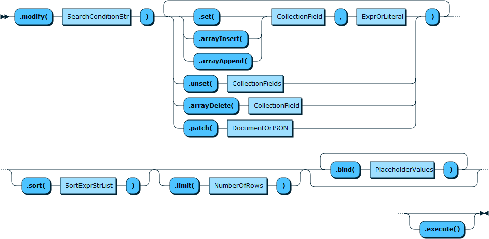
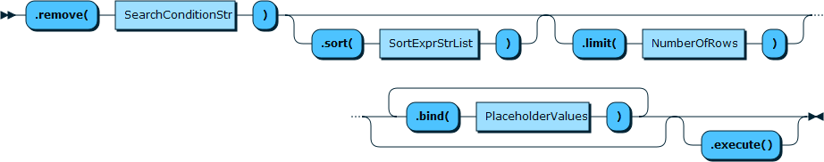

1.2.13.3.3.1. 8.0特性
1.2.13.3.3.1.1. mysql版本
- 5.5 (Oracle接受)
- 5.6
- 5.7
- 5.7.8
- MySQL数据库从5.7.8版本开始，也提供了对JSON的支持。
- 5.7.8
- 8.0
- 新的系统字典表
整合了存储有关数据库对象信息的事务数据字典，所有的元数据都用InnoDB引擎进行存储
- 权限支持role
- MySQL 8.0更好支持文档型数据库和JSON
- 不可见索引，开始支持invisible index，在优化SQL的过程中可以设置索引为不可见，优化器不会利用不可见索引
- 支持降序索引，可以对索引定义 DESC，之前，索引可以被反序扫描，但影响性能，而降序索引就可以高效的完成
- 支持RANK(), LAG()、NTILE()等函数
- 正则表达式增强，提供了REGEXP_LIKE()，EGEXP_INSTR(), REGEXP_REPLACE(), REGEXP_SUBSTR()等函数
- 新增备份锁，允许在线备份期间的DML，同时防止可能导致快照不一致的操作。 备份锁由LOCK INSTANCE FOR BACKUP和UNLOCK INSTANCE语法支持
- 默认字符集由latin1变为utf8mb4
- 8.0.11
- A MySQL server sets an _id value if the document does not contain the _id field
- 8.0.17
- Indexing Array Fields
- 新的系统字典表
1.2.13.3.3.1.2. 功能
1.2.13.3.3.1.2.1. X-Pulgin
8开始默认开启， 但是我看5.6开始就已经存在，但是支持的CURD方法什么的不完善
X Plugin is enabled by default in MySQL 8, therefore installing or upgrading to MySQL 8 makes the plugin available.
需要基于 X Protocol 的connector去链接
1.2.13.3.3.1.2.2. ID
会创建一个默认的 “_id” 字段(The document ID is a VARBINARY() with a maximum length of 32 characters.), 格式如下:
| unique_prefix | start_timestamp | serial |
|---|---|---|
| 4 bytes | 8 bytes | 16 bytes |
一个示例：0000 5a640138 000000000000002f
In MySQL 8.0.11 and higher, document IDs are generated by the server, not the client, so MySQL Shell does not automatically set an _id value. A MySQL server at 8.0.11 or higher sets an _id value if the document does not contain the _id field. A MySQL server at an earlier 8.0 release or at 5.7 does not set an _id value in this situation, so you must specify it explicitly. If you do not, MySQL Shell returns error 5115 Document is missing a required field.
1.2.13.3.3.1.2.3. 索引
JSON类型字段不支持索引，不过感觉我们也没有用json字段做索引的
因为没有schema，索引需要以这样的语法创建
myCollection.createIndex("count", {fields:[{"field": "$.count", "type":"INT", required:true}]});
多字段联合索引
myCollection.createIndex(
'myIndex',
{fields: [
{field: '$.myField', type: 'TEXT'},
{field: '$.myField2', type: 'TEXT(10)'},
{field: '$.myField3', type: 'INT'}
]}
)
列表类型可以，但只能有一个索引里面只能有一个字段是列表类型 For MySQL 8.0.17 and later, X DevAPI supports creating indexes based on array fields by setting the Boolean array field in the IndexField description to true. For example, to create an index on the emails array field:
collection.createIndex("emails_idx", //
{fields: [{"field": "$.emails", "type":"CHAR(128)", "array": true}]});
1.2.13.3.3.1.2.4. 增删改查
指定collection
# Use the collection 'my_collection'
my_coll = my_schema.get_collection('my_collection')
增
my_coll.add([
{'name': 'Nadya', 'age': 54},
{'name': 'Lukas', 'age': 32}
]).execute()
查
# Find a single document that has a field 'name' that starts with 'L'
docs = my_coll.find('name like :param').limit(1).bind('param', 'L%').execute()
改

删

1.2.13.3.3.1.2.5. 优缺点
优点
- 语法和mongo相似
缺点
- 目前应该没有现成的ORM可用
- 没找到合表查询的方法